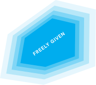
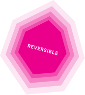
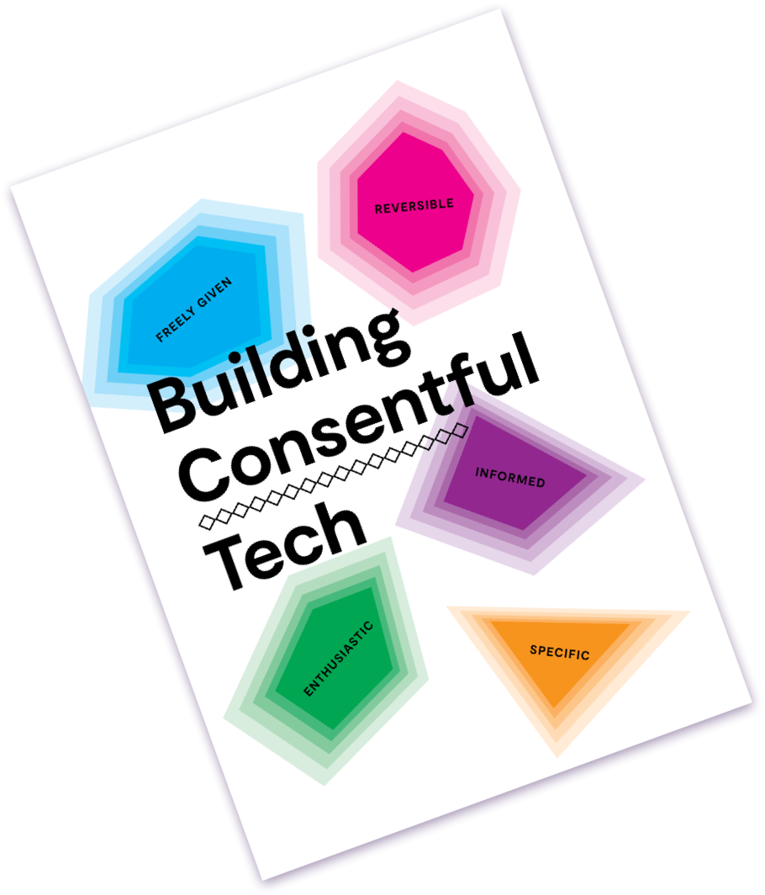

Good digital consent is...
The Consentful Tech Project’s definition of good digital consent is adapted from Planned Parenthood’s definition of sexual consent, which abbreviates to the easy-to-remember, tasty acronym “FRIES.” According to this definition, consent must be:
-

Freely given.
Doing something with someone is a decision that should be made without pressure, force, manipulation, or while incapacitated.
In technology, if an interface is designed to mislead people into doing something they normally wouldn’t do, the application is not consentful.
-

Reversible.
Anyone can change their mind about what they want to do, at any time.
In technology, you should have the right to limit access or entirely remove your data at any time.
-
Informed.
Informed. Be honest. For example, if someone says they’ll use protection and then they don’t, that’s not consent.
Consentful applications use clear and accessible language to inform people about the risks they present and the data they are storing, rather than burying these important details in, for example, the fine print of terms & conditions.
-
Enthusiastic.
If someone isn’t excited, or really into it, that’s not consent.
If people are giving up their data because they have to in order to access necessary services and not because they want to, that is not consentful.
-
Specific.
Saying yes to one thing doesn’t mean they’ve said yes to others.
A consentful app only uses data the person has directly given, not data acquired through other means like scraping or buying, and uses it only in ways someone has consented to.
Download the zine
Note: we track the number of times these resources are downloaded but do not track any other information about visitors.
Building Consentful Tech is a free 28 page zine for anyone who uses, makes, or is affected by digital technologies and wants to build a more consentful world. Intended as a community conversation starter rather than a comprehensive guide, it was written with input from dozens of technologists, designers, and community organizers.
DownloadNote: we track the number of times these resources are downloaded, but do not track any other information about visitors.
We encourage you to use the FRIES framework to think through how consentful the technologies we’re using and building are, and how much we consider consent in the ways we interact with each other, both offline and online.